Tree-based Methods
Last updated on Mar 9, 2022
%matplotlib inline
from utils.lecture07 import *
Decision Trees
Decision trees involve segmenting the predictor space into a number of simple regions. In order to make a prediction for a given observation, we typically use the mean or the mode of the training observations in the region to which it belongs. Since the set of splitting rules used to segment the predictor space can be summarized in a tree, these types of approaches are known as decision tree methods.
Regression Trees
For this session we will consider the Hitters dataset. It consists in individual level data of baseball players. In our applications, we are interested in predicting the players Salary.
# Load the data
hitters = pd.read_csv('data/Hitters.csv').dropna()
hitters.head()
| Unnamed: 0 | AtBat | Hits | HmRun | Runs | RBI | Walks | Years | CAtBat | CHits | ... | CRuns | CRBI | CWalks | League | Division | PutOuts | Assists | Errors | Salary | NewLeague | |
|---|---|---|---|---|---|---|---|---|---|---|---|---|---|---|---|---|---|---|---|---|---|
| 1 | -Alan Ashby | 315 | 81 | 7 | 24 | 38 | 39 | 14 | 3449 | 835 | ... | 321 | 414 | 375 | N | W | 632 | 43 | 10 | 475.0 | N |
| 2 | -Alvin Davis | 479 | 130 | 18 | 66 | 72 | 76 | 3 | 1624 | 457 | ... | 224 | 266 | 263 | A | W | 880 | 82 | 14 | 480.0 | A |
| 3 | -Andre Dawson | 496 | 141 | 20 | 65 | 78 | 37 | 11 | 5628 | 1575 | ... | 828 | 838 | 354 | N | E | 200 | 11 | 3 | 500.0 | N |
| 4 | -Andres Galarraga | 321 | 87 | 10 | 39 | 42 | 30 | 2 | 396 | 101 | ... | 48 | 46 | 33 | N | E | 805 | 40 | 4 | 91.5 | N |
| 5 | -Alfredo Griffin | 594 | 169 | 4 | 74 | 51 | 35 | 11 | 4408 | 1133 | ... | 501 | 336 | 194 | A | W | 282 | 421 | 25 | 750.0 | A |
5 rows × 21 columns
In particular, we are interested in looking how the number of Hits and the Years of experience predict the Salary.
# Get Features
features = ['Years', 'Hits']
X = hitters[features].values
y = np.log(hitters.Salary.values)
We are actually going to use log(salary) since it has a more gaussian distribution.
fig, (ax1, ax2) = plt.subplots(1,2, figsize=(11,4))
# Plot salary distribution
ax1.hist(hitters.Salary.values)
ax1.set_xlabel('Salary')
ax2.hist(y)
ax2.set_xlabel('Log(Salary)');
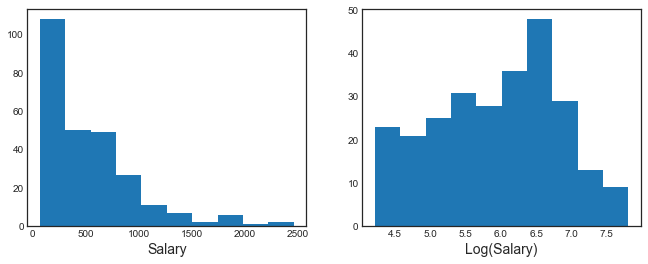
In order to understand what is a tree, let’s first have a look at one. We fit a regression three with 3 leaves or, equivalently put, 2 nodes.
# Fit regression tree
tree = DecisionTreeRegressor(max_leaf_nodes=3)
tree.fit(X, y)
DecisionTreeRegressor(max_leaf_nodes=3)
We are now going to plot the results visually. The biggest avantage of trees is interpretability.
# Figure 8.1
fig, ax = plt.subplots(1,1)
ax.set_title('Figure 8.1');
# Plot tree
plot_tree(tree, filled=True, feature_names=features, fontsize=14, ax=ax);
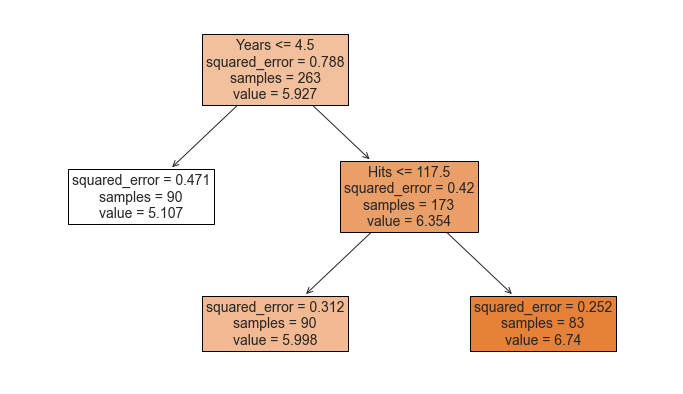
The tree consists of a series of splitting rules, starting at the top of the tree. The top split assigns observations having Years<4.5 to the left branch.1 The predicted salary for these players is given by the mean response value for the players in the data set with Years<4.5. For such players, the mean log salary is 5.107, and so we make a prediction of 5.107 thousands of dollars, i.e. $165,174, for these players. Players with Years>=4.5 are assigned to the right branch, and then that group is further subdivided by Hits.
Overall, the tree stratifies or segments the players into three regions of predictor space:
- players who have played for four or fewer years
- players who have played for five or more years and who made fewer than 118 hits last year, and
- players who have played for five or more years and who made at least 118 hits last year.
These three regions can be written as
- R1 = {X |
Years<4.5} - R2 = {X |
Years>=4.5,Hits<117.5}, and - R3 = {X |
Years>=4.5,Hits>=117.5}.
Since the dimension of $X$ is 2, we can visualize the space and the regions in a 2-dimensional graph.
# Figure 8.2
def make_figure_8_2():
# Init
hitters.plot('Years', 'Hits', kind='scatter', color='orange', figsize=(7,6))
plt.title('Figure 8.2')
plt.xlim(0,25); plt.ylim(ymin=-5);
plt.xticks([1, 4.5, 24]); plt.yticks([1, 117.5, 238]);
# Split lines
plt.vlines(4.5, ymin=-5, ymax=250, color='g')
plt.hlines(117.5, xmin=4.5, xmax=25, color='g')
# Regions
plt.annotate('R1', xy=(2,117.5), fontsize='xx-large')
plt.annotate('R2', xy=(11,60), fontsize='xx-large')
plt.annotate('R3', xy=(11,170), fontsize='xx-large');
make_figure_8_2()
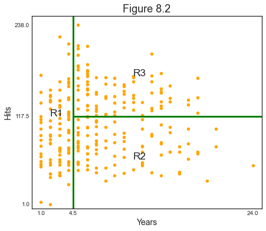
We might interpret the above regression tree as follows: Years is the most important factor in determining Salary, and players with less experience earn lower salaries than more experienced players. Given that a player is less experienced, the number of hits that he made in the previous year seems to play little role in his salary. But among players who have been in the major leagues for five or more years, the number of hits made in the previous year does affect salary, and players who made more hits last year tend to have higher salaries.
Building a Tree
There are two main steps in the construction of a tree:
- We divide the predictor space—that is, the set of possible values for $X_1, X_2, … , X_p$ into $J$ distinct and non-overlapping regions, $R_1,R_2,…,R_J$.
- For every observation that falls into the region $R_j$ , we make the same prediction, which is simply the mean of the response values for the training observations in $R_j$.
The second step is easy. But how does one construct the regions? Our purpose is to minimize the Sum of Squared Residuals, across the different regions:
$$ \sum_{j=1}^{J} \sum_{i \in R_{j}}\left(y_{i}-\hat{y}{R{j}}\right)^{2} $$
Unfortunately, it is computationally infeasible to consider every possible partition of the feature space into $J$ boxes.
For this reason, we take a top-down, greedy approach that is known as recursive binary splitting. The approach is top-down because it begins at the top of the tree (at which point all observations belong to a single region) and then successively splits the predictor space; each split is indicated via two new branches further down on the tree. It is greedy because at each step of the tree-building process, the best split is made at that particular step, rather than looking ahead and picking a split that will lead to a better tree in some future step.
In practice, the method is the following:
- we select the predictor $X_j$
- we select the cutpoint $s$ such that splitting the predictor space into the regions ${X|X_j < s}$ and ${X|X_j \geq s}$ leads to the greatest possible reduction in RSS
- we repeat (1)-(2) for all predictors $X_1, … , X_p$, i.e. we solve
$$ \arg \min_{j,s} \ \sum_{i: x_{i} \in {X|X_j < s}}\left(y_{i}-\hat{y}i\right)^{2}+\sum{i: x_{i} \in {X|X_j \geq s}}\left(y_{i}-\hat{y}_i\right)^{2} $$
- we choose the predictor and cutpoint such that the resulting tree has the lowest RSS
- we keep repeating (1)-(4) until a certain condition is met. However, after the first iteration we also have to pick which region to split which adds a further dimension to optimize over.
Let’s build our own Node class to play around with trees.
class Node:
"""
Class used to represent nodes in a Regression Tree
Attributes
----------
x : np.array
independent variables
y : np.array
dependent variables
idxs : np.array
indexes fo x and y for current node
depth : int
depth of the sub-tree (default 5)
Methods
-------
find_next_nodes(self)
Keep growing the tree
find_best_split(self)
Find the best split
split(self)
Split the tree
"""
def __init__(self, x, y, idxs, depth=5):
"""Initialize node"""
self.x = x
self.y = y
self.idxs = idxs
self.depth = depth
self.get_next_nodes()
def get_next_nodes(self):
"""If the node is not terminal, get further splits"""
if self.is_last_leaf: return
self.find_best_split()
self.split()
def find_best_split(self):
"""Loop over variables and their values to find the best split"""
best_score = float('inf')
# Loop over variables
for col in range(self.x.shape[1]):
x = self.x[self.idxs, col]
# Loop over all splits
for s in np.unique(x):
lhs = x <= s
rhs = x > s
curr_score = self.get_score(lhs, rhs)
# If best score, save it
if curr_score < best_score:
best_score = curr_score
self.split_col = col
self.split_val = s
return self
def get_score(self, lhs, rhs):
"""Get score of a given split"""
y = self.y[self.idxs]
lhs_mse = self.get_mse(y[lhs])
rhs_mse = self.get_mse(y[rhs])
return lhs_mse * lhs.sum() + rhs_mse * rhs.sum()
def get_mse(self, y): return np.mean((y-np.mean(y))**2)
def split(self):
"""Split a node into 2 sub-nodes (recursive)"""
x = self.x[self.idxs, self.split_col]
lhs = x <= self.split_val
rhs = x > self.split_val
self.lhs = Node(self.x, self.y, self.idxs[lhs], self.depth-1)
self.rhs = Node(self.x, self.y, self.idxs[rhs], self.depth-1)
to_print = (self.depth, self.split_col, self.split_val, sum(lhs), sum(rhs))
print('Split on layer %.0f: var%1.0f = %.4f (%.0f/%.0f)' % to_print)
return self
@property
def is_last_leaf(self): return self.depth<=1
What does a Node look like?
# Init first node
tree1 = Node(X, y, np.arange(len(y)), 1)
# Documentation (always comment and document your code!)
print(tree1.__doc__)
Class used to represent nodes in a Regression Tree
Attributes
----------
x : np.array
independent variables
y : np.array
dependent variables
idxs : np.array
indexes fo x and y for current node
depth : int
depth of the sub-tree (default 5)
Methods
-------
find_next_nodes(self)
Keep growing the tree
find_best_split(self)
Find the best split
split(self)
Split the tree
Which properties does it have?
# Inspect the class
dir(tree1)
['__class__',
'__delattr__',
'__dict__',
'__dir__',
'__doc__',
'__eq__',
'__format__',
'__ge__',
'__getattribute__',
'__gt__',
'__hash__',
'__init__',
'__init_subclass__',
'__le__',
'__lt__',
'__module__',
'__ne__',
'__new__',
'__reduce__',
'__reduce_ex__',
'__repr__',
'__setattr__',
'__sizeof__',
'__str__',
'__subclasshook__',
'__weakref__',
'depth',
'find_best_split',
'get_mse',
'get_next_nodes',
'get_score',
'idxs',
'is_last_leaf',
'split',
'x',
'y']
What is the depth? How many observations are there?
# Get info
print('Tree of depth %.0f with %.0f observations' % (tree1.depth, len(tree1.idxs)))
Tree of depth 1 with 263 observations
Fair enough, the tree is just a single leaf.
# Check if terminal
tree1.is_last_leaf
True
Let’s find the first split.
# Find best split
tree1.find_best_split()
print('Split at var%1.0f = %.4f' % (tree1.split_col, tree1.split_val))
Split at var0 = 4.0000
If has selected the first variable, at the value $4$.
If we call the split function, it will also tell us how many observations per leaf the split generates.
# Split tree
tree1.split();
Split on layer 1: var0 = 4.0000 (90/173)
Now we are ready to compute even deeper trees
# Check depth-3 tree
tree3 = Node(X, y, np.arange(len(y)), 3)
Split on layer 2: var1 = 4.0000 (2/88)
Split on layer 2: var1 = 117.0000 (90/83)
Split on layer 3: var0 = 4.0000 (90/173)
Pruning
The process described above may produce good predictions on the training set, but is likely to overfit the data, leading to poor test set performance. This is because the resulting tree might be too complex. A smaller tree with fewer splits might lead to lower variance and better interpretation at the cost of a little bias.
We can see it happening if we build the same tree as above, but with 5 leaves.
# Compute tree
overfit_tree = DecisionTreeRegressor(max_leaf_nodes=5).fit(X, y)
We plot the 5-leaf tree.
# Plot tree
fig, ax = plt.subplots(1,1)
plot_tree(overfit_tree, filled=True, feature_names=features, fontsize=14, ax=ax);
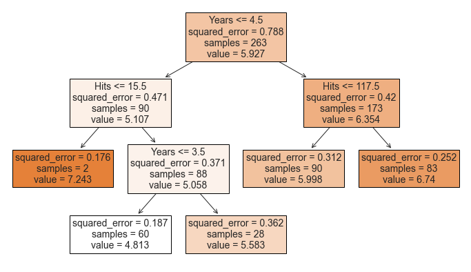
The split on the far left is predicting a very high Salary (7.243) for players with few Years of experience and few Hits. Indeed this prediction is based on an extremely tiny subsample (2). They are probably outliers and our tree is most likely overfitting.
One possible alternative is to insert a minimum number of observation per leaf.
# Compute tree
no_overfit_tree = DecisionTreeRegressor(max_leaf_nodes=5, min_samples_leaf=10).fit(X, y)
# Plot tree
fig, ax = plt.subplots(1,1)
plot_tree(no_overfit_tree, filled=True, feature_names=features, fontsize=14, ax=ax);
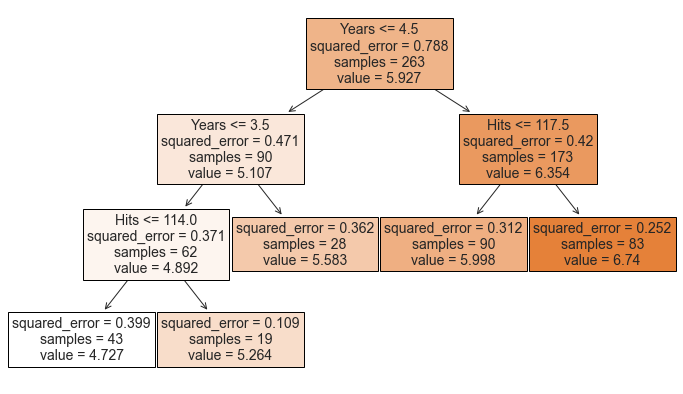
Now the tree makes much more sense: the lower the Years and the Hits, the lower the predicted Salary as we can see from the shades getting darker and darker as we move left to right
Another possible alternative to the process described above is to build the tree only so long as the decrease in the RSS due to each split exceeds some (high) threshold.
This strategy will result in smaller trees, but is too short-sighted since a seemingly worthless split early on in the tree might be followed by a very good split—that is, a split that leads to a large reduction in RSS later on.
We can use cross-validation to pick the optimal tree length.
# Import original split
features = ['Years', 'Hits', 'RBI', 'PutOuts', 'Walks', 'Runs', 'AtBat', 'HmRun']
X_train = pd.read_csv('data/Hitters_X_train.csv').dropna()[features]
X_test = pd.read_csv('data/Hitters_X_test.csv').dropna()[features]
y_train = pd.read_csv('data/Hitters_y_train.csv').dropna()
y_test = pd.read_csv('data/Hitters_y_test.csv').dropna()
# Init
params = range(2,11)
reg_scores = np.zeros((len(params),3))
best_score = 10**6
# Loop over all parameters
for i,k in enumerate(params):
# Model
tree = DecisionTreeRegressor(max_leaf_nodes=k)
# Loop over splits
tree.fit(X_train, y_train)
reg_scores[i,0] = mean_squared_error(tree.predict(X_train), y_train)
reg_scores[i,1] = mean_squared_error(tree.predict(X_test), y_test)
# Get CV score
kf6 = KFold(n_splits=6)
reg_scores[i,2] = -cross_val_score(tree, X_train, y_train, cv=kf6, scoring='neg_mean_squared_error').mean()
# Save best model
if reg_scores[i,2]<best_score:
best_model = tree
best_score = reg_scores[i,2]
Let’s plot the optimal tree depth, using 6-fold cv.
# Figure 8.5
def make_figure_8_5():
# Init
fig, (ax1,ax2) = plt.subplots(1,2,figsize=(16,6))
fig.suptitle('Figure 8.5')
# Plot scores
ax1.plot(params, reg_scores);
ax1.axvline(params[np.argmin(reg_scores[:,2])], c='k', ls='--')
ax1.legend(['Train','Test','6-fold CV']);
ax1.set_title('Cross-Validation Scores');
# Plot best tree
plot_tree(best_model, filled=True, impurity=False, feature_names=features, fontsize=12, ax=ax2);
ax2.set_title('Best Model');
make_figure_8_5()
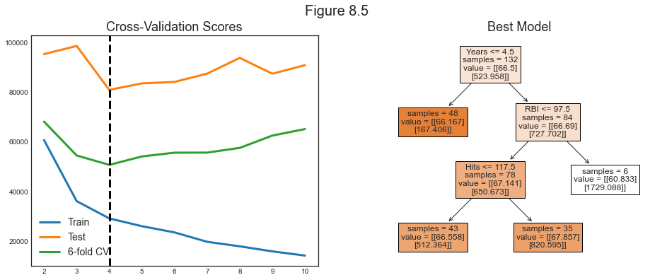
The optimal tree has 4 leaves.
Classification Trees
A classification tree is very similar to a regression tree, except that it is used to predict a qualitative response rather than a quantitative one.
For a classification tree, we predict that each observation belongs to the most commonly occurring class of training observations in the region to which it belongs.
Building a Classification Tree
The task of growing a classification tree is similar to the task of growing a regression tree. However, in the classification setting, RSS cannot be used as a criterion for making the binary splits.
We define $\hat p_{mk}$ as the proportion of training observations in the $m^{th}$ region that are from the $k^{th}$ class. Possible loss functions to decide the splits are:
- Classification error rate
$$ E = 1 - \max {k}\left(\hat{p}{m k}\right) $$
- Gini index
$$ G=\sum_{k=1}^{K} \hat{p}{m k}\left(1-\hat{p}{m k}\right) $$
- Entropy
$$ D=-\sum_{k=1}^{K} \hat{p}{m k} \log \hat{p}{m k} $$
In 2-class classification problems, this is what the different scores look like, for different proportions of class 2 ($p$), when the true proportion is $p_0 =0.5$.

When building a classification tree, either the Gini index or the entropy are typically used to evaluate the quality of a particular split, since these two approaches are more sensitive to node purity than is the classification error rate.
For this section we will work with the Heart dataset on individual heart failures. We will try to use individual characteristics in order to predict heart deseases (HD). The varaible is binary: Yes, No.
# Load heart dataset
heart = pd.read_csv('data/Heart.csv').drop('Unnamed: 0', axis=1).dropna()
heart.head()
| Age | Sex | ChestPain | RestBP | Chol | Fbs | RestECG | MaxHR | ExAng | Oldpeak | Slope | Ca | Thal | AHD | |
|---|---|---|---|---|---|---|---|---|---|---|---|---|---|---|
| 0 | 63 | 1 | typical | 145 | 233 | 1 | 2 | 150 | 0 | 2.3 | 3 | 0.0 | fixed | No |
| 1 | 67 | 1 | asymptomatic | 160 | 286 | 0 | 2 | 108 | 1 | 1.5 | 2 | 3.0 | normal | Yes |
| 2 | 67 | 1 | asymptomatic | 120 | 229 | 0 | 2 | 129 | 1 | 2.6 | 2 | 2.0 | reversable | Yes |
| 3 | 37 | 1 | nonanginal | 130 | 250 | 0 | 0 | 187 | 0 | 3.5 | 3 | 0.0 | normal | No |
| 4 | 41 | 0 | nontypical | 130 | 204 | 0 | 2 | 172 | 0 | 1.4 | 1 | 0.0 | normal | No |
# Fastorize variables
heart.ChestPain = pd.factorize(heart.ChestPain)[0]
heart.Thal = pd.factorize(heart.Thal)[0]
# Set features
features = [col for col in heart.columns if col!='AHD']
X2 = heart[features]
y2 = pd.factorize(heart.AHD)[0]
We now fit our classifier.
# Fit classification tree
clf = DecisionTreeClassifier(max_depth=None, max_leaf_nodes=11)
clf.fit(X2,y2)
DecisionTreeClassifier(max_leaf_nodes=11)
What is the score?
# Final score
clf.score(X2,y2)
0.8686868686868687
Let’s have a look at the whole tree.
# Figure 8.6 a
def make_fig_8_6a():
# Init
fig, ax = plt.subplots(1,1, figsize=(16,12))
ax.set_title('Figure 8.6');
# Plot tree
plot_tree(clf, filled=True, feature_names=features, class_names=['No','Yes'], fontsize=12, ax=ax);
make_fig_8_6a()
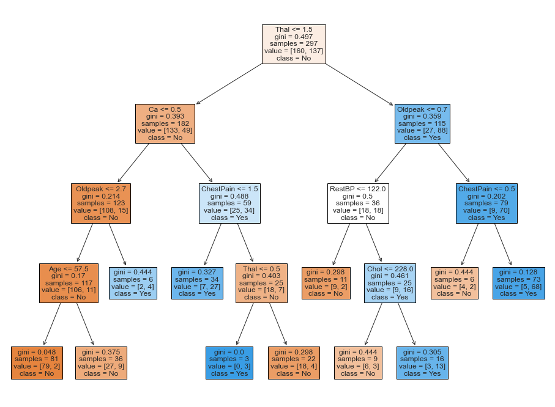
This figure has a surprising characteristic: some of the splits yield two terminal nodes that have the same predicted value.
For instance, consider the split Age<=57.5 near the bottom left of the unpruned tree. Regardless of the value of Age, a response value of No is predicted for those observations. Why, then, is the split performed at all?
The split is performed because it leads to increased node purity. That is, 2/81 of the observations corresponding to the left-hand leaf have a response value of Yes, whereas 9/36 of those corresponding to the right-hand leaf have a response value of Yes. Why is node purity important? Suppose that we have a test observation that belongs to the region given by that left-hand leaf. Then we can be pretty certain that its response value is No. In contrast, if a test observation belongs to the region given by the right-hand leaf, then its response value is probably No, but we are much less certain. Even though the split Age<=57.5 does not reduce the classification error, it improves the Gini index and the entropy, which are more sensitive to node purity.
Pruning for Classification
We can repeat the pruning exercise also for the classification task.
# Figure 8.6 b
def make_figure_8_6b():
# Init
fig, (ax1, ax2) = plt.subplots(1,2,figsize=(14,6))
fig.suptitle('Figure 8.6')
# Plot scores
ax1.plot(params, clf_scores);
ax1.legend(['Train','Test','6-fold CV']);
# Plot best tree
plot_tree(best_model, filled=True, impurity=False, feature_names=features, fontsize=12, ax=ax2);
# Init
J = 10
params = range(2,11)
clf_scores = np.zeros((len(params),3))
best_score = 100
# Loop over all parameters
for i,k in enumerate(params):
# Model
tree = DecisionTreeClassifier(max_leaf_nodes=k)
# Loop J times
temp_scores = np.zeros((J,3))
for j in range (J):
# Loop over splits
X2_train, X2_test, y2_train, y2_test = train_test_split(X2, y2, test_size=0.5, random_state=j)
m = tree.fit(X2_train, y2_train)
temp_scores[j,0] = mean_squared_error(m.predict(X2_train), y2_train)
temp_scores[j,1] = mean_squared_error(m.predict(X2_test), y2_test)
# Get CV score
kf6 = KFold(n_splits=6)
temp_scores[j,2] = -cross_val_score(tree, X2_train, y2_train, cv=kf6, scoring='neg_mean_squared_error').mean()
# Save best model
if temp_scores[j,2]<best_score:
best_model = m
best_score = temp_scores[j,2]
# Average
clf_scores[i,:] = np.mean(temp_scores, axis=0)
make_figure_8_6b()
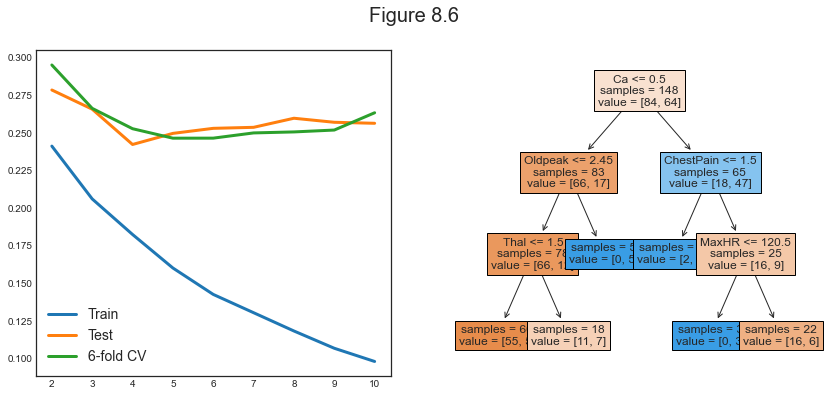
Other Issues
Missing Predictor Values
There are usually 2 main ways to deal with missing values:
- discard the observations
- fill the missing values with predictions using the other observations (e.g. mean)
With trees we can do better:
- code them as a separate class (e.g. ‘missing’)
- generate splits using non-missing data and use non-missing variables on missing data to mimic the splits with missing data
Categorical Predictors
When splitting a predictor having q possible unordered values, there are $2^{q−1} − 1$ possible partitions of the q values into two groups, and the computations become prohibitive for large $q$. However, with a $0 − 1$ outcome, this computation simplifies.
Linear Combination Splits
Rather than restricting splits to be of the form $X_j \leq s$, one can allow splits along linear combinations of the form $a_j X_j \leq s$. The weights $a_j$ become part of the optimization procedure.
Other Tree-Building Procedures
The procedure we have seen for building trees is called CART (Classification and Regression Tree). There are other procedures.
The Loss Matrix
With respect to other methods, the choice of the loss functions plays a much more important role.
Binary Splits
You can do non-binary splits but in the end they are just weaker versions of binary splits.
Instability
Trees have very high variance.
Difficulty in Capturing Additive Structure
Trees are quite bad at modeling additive structures.
Lack of Smoothness
Trees are not smooth.
Trees vs Regression
Advantages
- Trees are very easy to explain to people. In fact, they are even easier to explain than linear regression!
- Some people believe that decision trees more closely mirror human decision-making than do the regression and classification approaches seen in previous chapters.
- Trees can be displayed graphically, and are easily interpreted even by a non-expert (especially if they are small).
- Trees can easily handle qualitative predictors without the need to create dummy variables.
Disadvantages
- trees generally do not have the same level of predictive accuracy as some of the other regression and classification approaches seen in this book.
- trees can be very non-robust. In other words, a small change in the data can cause a large change in the final estimated tree.
7.2 Bagging, Random Forests, Boosting
Bagging, random forests, and boosting use trees as building blocks to construct more powerful prediction models.
Bagging
The main problem of decision trees is that they suffer from high variance. Bootstrap aggregation, or bagging, is a general-purpose procedure for reducing the variance of a statistical learning method.
The main idea behind bagging is that, given a set of n independent observations $Z_1,…,Z_n$, each with variance $\sigma^2$, the variance of the mean $\bar Z$ of the observations is given by $\sigma^2/n$. In other words, averaging a set of observations reduces variance.
Indeed bagging consists in taking many training sets from the population, build a separate prediction model using each training set, and average the resulting predictions. Since we do not have access to many training sets, we resort to bootstrapping.
Out-of-Bag Error Estimation
It turns out that there is a very straightforward way to estimate the test error of a bagged model, without the need to perform cross-validation or the validation set approach. Recall that the key to bagging is that trees are repeatedly fit to bootstrapped subsets of the observations. One can show that on average, each bagged tree makes use of around two-thirds of the observations. The remaining one-third of the observations not used to fit a given bagged tree are referred to as the out-of-bag (OOB) observations. We can predict the response for the ith observation using each of the trees in which that observation was OOB.
We are now going to compute the Gini index for the Heart dataset using different numbers of trees.
# Init (takes a lot of time with J=30)
params = range(2,50)
bagging_scores = np.zeros((len(params),2))
J = 30;
# Loop over parameters
for i, k in enumerate(params):
print("Computing k=%1.0f" % k, end ="")
# Repeat J
temp_scores = np.zeros((J,2))
for j in range(J):
X2_train, X2_test, y2_train, y2_test = train_test_split(X2, y2, test_size=0.5, random_state=j)
bagging = BaggingClassifier(DecisionTreeClassifier(), max_samples=k, oob_score=True)
bagging.fit(X2_train,y2_train)
temp_scores[j,0] = bagging.score(X2_test, y2_test)
temp_scores[j,1] = bagging.oob_score_
# Average
bagging_scores[i,:] = np.mean(temp_scores, axis=0)
print("", end="\r")
Computing k=49
Let’s plot the Out-of-Bag error computed while generating the bagged estimator.
# Make new figure 1
def make_new_figure_1():
# Init
fig, ax = plt.subplots(1,1,figsize=(10,6))
fig.suptitle("Estimated $R^2$")
# Plot scores
ax.plot(params, bagging_scores);
ax.legend(['Test','OOB']);
ax.set_xlabel('Number of Trees'); ax.set_ylabel('R^2');
make_new_figure_1()
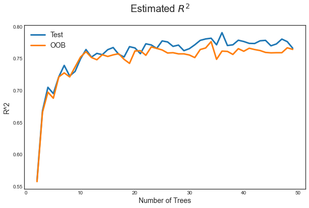
It can be shown that with B sufficiently large, OOB error is virtually equivalent to leave-one-out cross-validation error. The OOB approach for estimating the test error is particularly convenient when performing bagging on large data sets for which cross-validation would be computationally onerous.
Variable Importance Measures
As we have discussed, the main advantage of bagging is to reduce prediction variance. However, with bagging it can be difficult to interpret the resulting model. In fact we cannot draw trees anymore given we have too many of them.
However, one can obtain an overall summary of the importance of each predictor using the RSS (for bagging regression trees) or the Gini index (for bagging classification trees). In the case of bagging regression trees, we can record the total amount that the RSS is decreased due to splits over a given predictor, averaged over all trees. A large value indicates an important predictor. Similarly, in the context of bagging classification trees, we can add up the total amount that the Gini index is decreased by splits over a given predictor, averaged over all trees.
# Compute feature importance
feature_importances = np.mean([tree.feature_importances_ for tree in bagging.estimators_], axis=0)
We can have a look at the importance of each feature.
# Figure 8.9
def make_figure_8_9():
# Init
fig, ax = plt.subplots(1,1,figsize=(8,8))
ax.set_title('Figure 8.9: Feature Importance');
# Plot feature importance
h1 = pd.DataFrame({'Importance':feature_importances*100}, index=features)
h1 = h1.sort_values(by='Importance', axis=0, ascending=False)
h1.plot(kind='barh', color='r', ax=ax)
ax.set_xlabel('Variable Importance');
plt.yticks(fontsize=14);
plt.gca().legend_ = None;
make_figure_8_9()
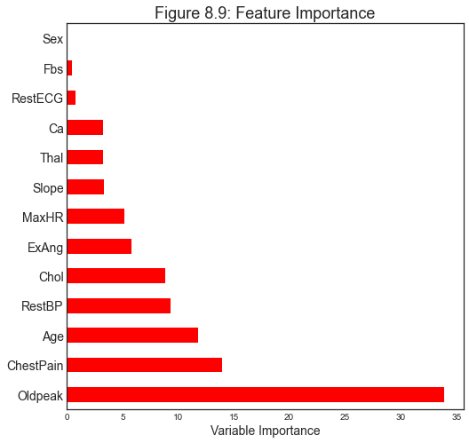
Random Forests
Random forests provide an improvement over bagged trees by way of a small tweak that decorrelates the trees. As in bagging, we build a number of decision trees on bootstrapped training samples. But when building these decision trees, each time a split in a tree is considered, a random sample of $m$ predictors is chosen as split candidates from the full set of $p$ predictors. The split is allowed to use only one of those m predictors. A fresh sample of $m$ predictors is taken at each split, and typically we choose $m \sim \sqrt{p}$ — that is, the number of predictors considered at each split is approximately equal to the square root of the total number of predictors
In other words, in building a random forest, at each split in the tree, the algorithm is not even allowed to consider a majority of the available predictors. This may sound crazy, but it has a clever rationale. Suppose that there is one very strong predictor in the data set, along with a number of other moderately strong predictors. Then in the collection of bagged trees, most or all of the trees will use this strong predictor in the top split. Consequently, all of the bagged trees will look quite similar to each other. Hence the predictions from the bagged trees will be highly correlated. Unfortunately, averaging many highly correlated quantities does not lead to as large of a reduction in variance as averaging many uncorrelated quantities. In particular, this means that bagging will not lead to a substantial reduction in variance over a single tree in this setting.
Random forests overcome this problem by forcing each split to consider only a subset of the predictors.
Let’s split the data in 2 and compute test and estimated $R^2$, for both forest and trees.
import warnings
warnings.simplefilter('ignore')
# Init (takes a lot of time with J=30)
params = range(2,50)
forest_scores = np.zeros((len(params),2))
J = 30
# Loop over parameters
for i, k in enumerate(params):
print("Computing k=%1.0f" % k, end ="")
# Repeat J
temp_scores = np.zeros((J,2))
for j in range(J):
X2_train, X2_test, y2_train, y2_test = train_test_split(X2, y2, test_size=0.5, random_state=j)
forest = RandomForestClassifier(n_estimators=k, oob_score=True, max_features="sqrt")
forest.fit(X2_train,y2_train)
temp_scores[j,0] = forest.score(X2_test, y2_test)
temp_scores[j,1] = forest.oob_score_
# Average
forest_scores[i,:] = np.mean(temp_scores, axis=0)
print("", end="\r")
Computing k=49
# Figure 8.8
def make_figure_8_8():
# Init
fig, ax = plt.subplots(1,1,figsize=(10,6))
ax.set_title('Figure 8.8');
# Plot scores
ax.plot(params, bagging_scores);
ax.plot(params, forest_scores);
ax.legend(['Test - Bagging','OOB - Bagging', 'Test - Forest','OOB - Forest']);
ax.set_xlabel('Number of Trees'); ax.set_ylabel('R^2');
make_figure_8_8()
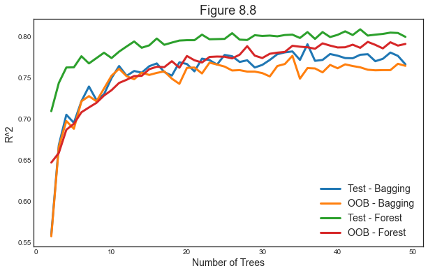
As for bagging, we can plot feature importance.
# Make new figure 2
def make_new_figure_2():
# Init
fig, (ax1,ax2) = plt.subplots(1,2,figsize=(15,7))
# Plot feature importance - Bagging
h1 = pd.DataFrame({'Importance':feature_importances*100}, index=features)
h1 = h1.sort_values(by='Importance', axis=0, ascending=False)
h1.plot(kind='barh', color='r', ax=ax1)
ax1.set_xlabel('Variable Importance');
ax1.set_title('Tree Bagging')
# Plot feature importance
h2 = pd.DataFrame({'Importance':forest.feature_importances_*100}, index=features)
h2 = h2.sort_values(by='Importance', axis=0, ascending=False)
h2.plot(kind='barh', color='r', ax=ax2)
ax2.set_title('Random Forest')
# All plots
for ax in fig.axes:
ax.set_xlabel('Variable Importance');
ax.legend([])
make_new_figure_2()

From the figure we observe that varaible importance ranking is similar with bagging and random forests, but there are significant differences.
We are now going to look at the importance of random forests using the Khan gene dataset. This dataset has the peculiarity of having a large number of features and very few observations.
# Load data
gene = pd.read_csv('data/Khan.csv')
print(len(gene))
gene.head()
83
| x | V1 | V2 | V3 | V4 | V5 | V6 | V7 | V8 | V9 | ... | V2299 | V2300 | V2301 | V2302 | V2303 | V2304 | V2305 | V2306 | V2307 | V2308 | |
|---|---|---|---|---|---|---|---|---|---|---|---|---|---|---|---|---|---|---|---|---|---|
| 0 | 2 | 0.773344 | -2.438405 | -0.482562 | -2.721135 | -1.217058 | 0.827809 | 1.342604 | 0.057042 | 0.133569 | ... | -0.238511 | -0.027474 | -1.660205 | 0.588231 | -0.463624 | -3.952845 | -5.496768 | -1.414282 | -0.647600 | -1.763172 |
| 1 | 2 | -0.078178 | -2.415754 | 0.412772 | -2.825146 | -0.626236 | 0.054488 | 1.429498 | -0.120249 | 0.456792 | ... | -0.657394 | -0.246284 | -0.836325 | -0.571284 | 0.034788 | -2.478130 | -3.661264 | -1.093923 | -1.209320 | -0.824395 |
| 2 | 2 | -0.084469 | -1.649739 | -0.241308 | -2.875286 | -0.889405 | -0.027474 | 1.159300 | 0.015676 | 0.191942 | ... | -0.696352 | 0.024985 | -1.059872 | -0.403767 | -0.678653 | -2.939352 | -2.736450 | -1.965399 | -0.805868 | -1.139434 |
| 3 | 2 | 0.965614 | -2.380547 | 0.625297 | -1.741256 | -0.845366 | 0.949687 | 1.093801 | 0.819736 | -0.284620 | ... | 0.259746 | 0.357115 | -1.893128 | 0.255107 | 0.163309 | -1.021929 | -2.077843 | -1.127629 | 0.331531 | -2.179483 |
| 4 | 2 | 0.075664 | -1.728785 | 0.852626 | 0.272695 | -1.841370 | 0.327936 | 1.251219 | 0.771450 | 0.030917 | ... | -0.200404 | 0.061753 | -2.273998 | -0.039365 | 0.368801 | -2.566551 | -1.675044 | -1.082050 | -0.965218 | -1.836966 |
5 rows × 2309 columns
The dataset has 83 rows and 2309 columns.
Since it’s a very wide dataset, selecting the right features is crucial.
Also note that we cannot run linear regression on this dataset.
# Reduce dataset size
gene_small = gene.iloc[:,0:202]
X = gene_small.iloc[:,1:]
y = gene_small.iloc[:,0]
Let’s now cross-validate over number of trees and maximum number of features considered.
# Init (takes a lot of time with J=30)
params = range(50,150,10)
m_scores = np.zeros((len(params),3))
p = np.shape(X)[1]
J = 30;
# Loop over parameters
for i, k in enumerate(params):
# Array of features
ms = [round(p/2), round(np.sqrt(p)), round(np.log(p))]
# Repeat L times
temp_scores = np.zeros((J,3))
for j in range(J):
print("Computing k=%1.0f (iter=%1.0f)" % (k,j+1), end ="")
# Loop over values of m
for index, m in enumerate(ms):
forest = RandomForestClassifier(n_estimators=k, max_features=m, oob_score=True)
forest.fit(X, y)
temp_scores[j,index] = forest.oob_score_
print("", end="\r")
# Average
m_scores[i,:] = np.mean(temp_scores, axis=0)
Computing k=140 (iter=30)
# Figure 8.10
def make_figure_8_10():
# Init
fig, ax = plt.subplots(1,1,figsize=(10,6))
ax.set_title('Figure 8.10');
# Plot scores
ax.plot(params, m_scores);
ax.legend(['m=p/2','m=sqrt(p)','m=log(p)']);
ax.set_xlabel('Number of Trees'); ax.set_ylabel('Test Classification Accuracy');
make_figure_8_10()
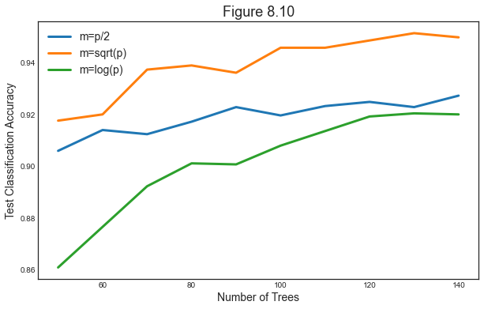
It seems that the best scores are achieved with few features and many trees.
Boosting
Like bagging, boosting is a general approach that can be applied to many statistical learning methods for regression or classification. Here we restrict our discussion of boosting to the context of decision trees.
Boosting works similarly to bagging, except that the trees are grown sequentially: each tree is grown using information from previously grown trees. Boosting does not involve bootstrap sampling; instead each tree is fit on a modified version of the original data set.
What is the idea behind this procedure? Given the current model, we fit a decision tree to the residuals from the model. That is, we fit a tree using the current residuals, rather than the outcome $y$, as the response. We then add this new decision tree into the fitted function in order to update the residuals. Each of these trees can be rather small, with just a few terminal nodes, determined by the parameter $d$ in the algorithm. By fitting small trees to the residuals, we slowly improve $\hat f$ in areas where it does not perform well. The shrinkage parameter λ slows the process down even further, allowing more and different shaped trees to attack the resid- uals. In general, statistical learning approaches that learn slowly tend to perform well.
Algorithm
The boosting algorithm works as follows:
-
Set $\hat f(x)=0$ and $r_i=y_i$ for all $i$ in the training set.
-
For $b=1,2,…,B$ repeat:
a. Fit a tree $\hat f^b $ with $d$ splits ($d+1$ terminal nodes) to the training data $(X,r)$.
b. Update $\hat f$ by adding in a shrunken version of the new tree: $$ \hat f(x) \leftarrow \hat f(x) + \lambda \hat f^b(x) $$
c. Update the residuals $$ r_i = r_i - \lambda \hat f^b(x_i) $$
-
Output the boosted model $$ \hat{f}(x)=\sum_{b=1}^{B} \lambda \hat{f}^{b}(x) $$
Boosting has three tuning parameters:
- The number of trees $B$
- The shrinkage parameter $\lambda$. This controls the rate at which boosting learns.
- The number of splits in each tree $d$ , which controls the complexity of the boosted ensemble. Often d = 1 works well, in which case each tree is a stump, consisting of a single split.
# Init , oob_score=True
params = range(50,150,10)
boost_scores = np.zeros((len(params),3))
p = np.shape(X)[1]
J = 30
# Loop over parameters
for i, k in enumerate(params):
# Repeat L times
temp_scores = np.zeros((J,3))
for j in range(J):
print("Computing k=%1.0f (iter=%1.0f)" % (k,j+1), end ="")
X_train, X_test, y_train, y_test = train_test_split(X, y, test_size=20, random_state=j)
# First score: random forest
forest = RandomForestClassifier(n_estimators=k, max_features="sqrt")
forest.fit(X_train, y_train)
temp_scores[j,0] = forest.score(X_test, y_test)
# Second score: boosting with 1-split trees
boost1 = GradientBoostingClassifier(learning_rate=0.01, max_depth=1, n_estimators=k, max_features="sqrt")
boost1.fit(X_train, y_train)
temp_scores[j,1] = boost1.score(X_test, y_test)
# Third score: boosting with 1-split trees
boost2 = GradientBoostingClassifier(learning_rate=0.01, max_depth=2, n_estimators=k, max_features="sqrt")
boost2.fit(X_train, y_train)
temp_scores[j,2] = boost2.score(X_test, y_test)
print("", end="\r")
# Average
boost_scores[i,:] = np.mean(temp_scores, axis=0)
Computing k=140 (iter=30)
Let’s compare boosting and forest.
# Figure 8.11
def make_figure_8_11():
# Init
fig, ax = plt.subplots(1,1,figsize=(10,6))
ax.set_title('Figure 8.11');
# Plot scores
ax.plot(params, m_scores);
ax.legend(['forest','boosting with d=1','boosting with d=2']);
ax.set_xlabel('Number of Trees'); ax.set_ylabel('Test Classification Accuracy');
make_figure_8_11()
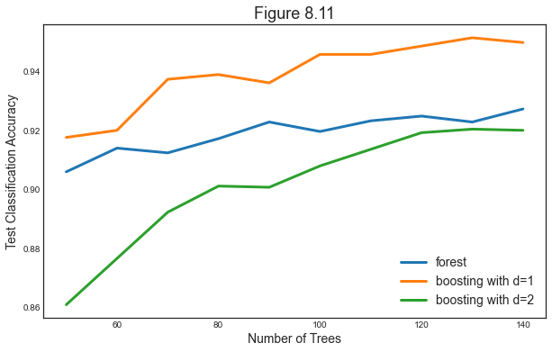